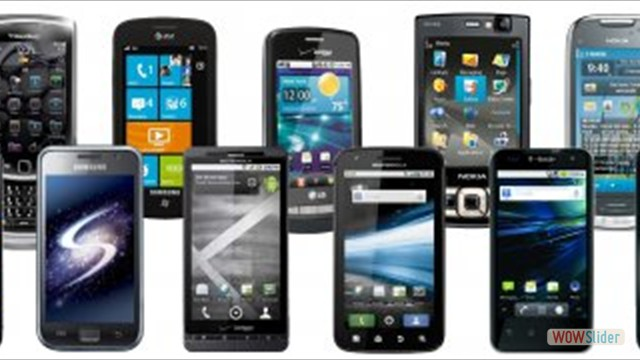
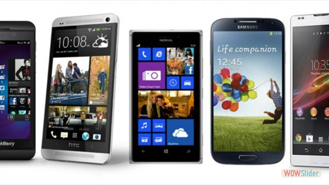
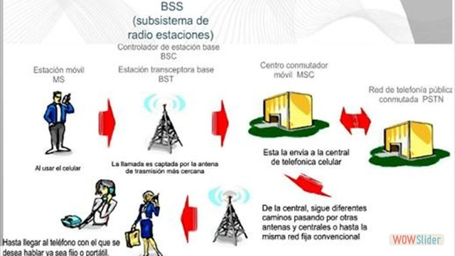
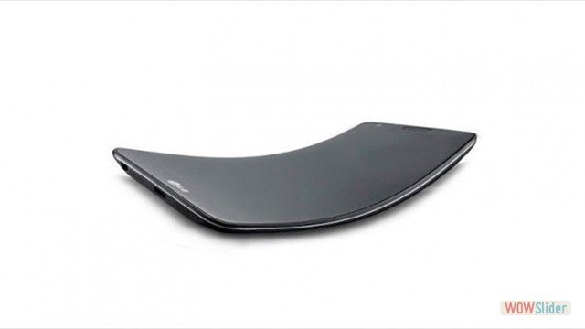
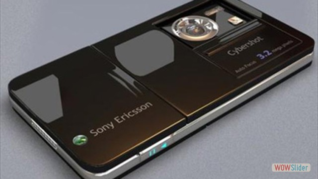
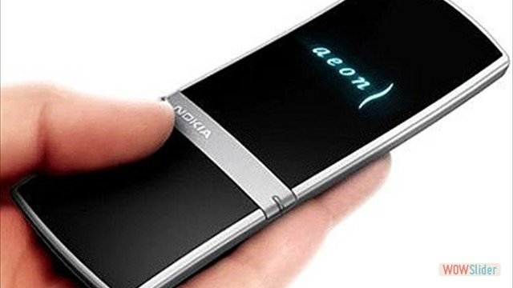
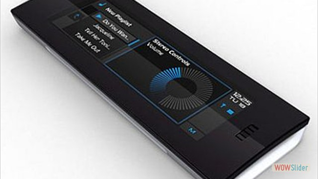

Telefonía celular en mexico

- 
- 
- 

- 
- 
- 
- 
http://wowslider.com/ by WOWSlider.com v8.7
Teléfono Celular
Esta es mi imagen de perfil:
Esta es mi imagen de perfil:
La telefonia Movil es un sistema de comunicación para la transmisión de sonidos a larga distancia mediante medios eléctricos o electromagnéticos.
La telefonía celular debe contar con un elemento básico para poder funcionar como tal: el celular o dispositivo celular. Este no es nada más ni nada menos que un teléfono de pequeñas dimensiones que posee conexión telefónica a las redes de telefonía móviles que no son las mismas que las de telefonía convencional o tradicional. La conexión entre ambas partes (sistema de telefonía y el dispositivo celular) se da a través de ondas o frecuencias que van por otros caminos al de la telefonía regular. Debido justamente a esta posibilidad de ser móvil, el teléfono celular permite a la persona moverse tranquilamente por cualquier lugar sin depender de cables o aparátos estáticos que deban ser mantenidos en un espacio específico.
Martin Cooper fue el pionero en esta tecnología, a él se le considera como “el padre de la telefonía celular” al introducir el primer radioteléfono, en 1973, en Estados Unidos, mientras trabajaba para Motorola; pero no fue hasta 1979 cuando aparecieron los primeros sistemas comerciales en Tokio, Japón por la compañía NTT. En 1981, los países nórdicos introdujeron un sistema celular similar a AMPS (Advanced Mobile Phone System). Por otro lado, en Estados Unidos, gracias a que la entidad reguladora de ese país adoptó reglas para la creación de un servicio comercial de telefonía celular, en 1983 se puso en operación el primer sistema comercial en la ciudad de Chicago. Con ese punto de partida, en varios países se diseminó la telefonía celular como una alternativa a la telefonía convencional inalámbrica. La tecnología tuvo gran aceptación, por lo que a los pocos años de implantarse se empezó a saturar el servicio. En ese sentido, hubo la necesidad de desarrollar e implantar otras formas de acceso múltiple al canal y transformar los sistemas analógicos a digitales, con el objeto de darle cabida a más usuarios. Para separar una etapa de la otra, la telefonía celular se ha caracterizado por contar con diferentes generaciones
Éste es el primer teléfono celular de la historia.Su nombre es Motorola DynaTAC 8000X y apareció por primera vez en el año de 1983. Era algo pesado, 28 onzas (unos 780 gramos) y medía 33" x 9" x 4.5cm.". Obviamente era analógico, y tenía un pequeño display de LEDs. La batería sólo daba para una hora de conversación u 8 horas en stand-by. La calidad de sonidoera muy mala, era pesado y poco estético, pero aún así, había personas que pagaban los USD $3,995 que costaba, lo cual lo convirtió en un objeto de lujo y solo asequible a determinadas esferas sociales, aún a pesar de su diseño y peso.
Suelen ser pequeños,tienen funciones básicas o las funciones que traen ya no están a la altura de un SmartPhone. Precios muy economicos, Características muy limitadas (cámara VGA, memoria interna, sin flash, se ponen muy lentos con el tiempo) No reciben soporte ni actualizaciones
Suelen ser muy equilibrados en sus características Generalmente no superan los 500 dólares en precio (como mucho). Tienen algunas funciones de la gama alta del momento. Los materiales ya son de calidad aceptable. Pantallas que no superan las 4.5 pulgadas (en promedio). Cámaras de 3 a 5 Mpx Tienen soporte limitado pero existe comunidad de desabolladores para actualizar con una ROM

Pantallas de 4 pulgadas en adelante Memoria interna desde 16GB Soporte de actualizaciones (las recibe antes pero depende de la marca) Diseñados para redes 4G Muchos núcleos, procesadores y RAM para que sean muy rápidos Cámaras de calidad desde 8 Mpx Destacan por ser relativamente delgados Eficiencia energética Se conectan con la TV Desde 800 dólares en adelante Se conectan con Wearables (Galaxy Gear,iWatch, etc) Mide tu ritmo cardíaco, predice el futuro, te ayuda a bajar de peso, puedes mirar las estrellas, lee tu mente (es broma) y todo lo que se te ocurra.

El nuevo smartphone de LG, el LG Z,destaca por su flexibilidad y nunca mejor dicho. La pantalla de este dispositivo va a ser cóncava, parecida a la la de una pantalla OLED curva de TV. También será Full HD, la misma que incorpora el también anunciado LG G2.
contará con una camara de 3.2 megapixeles, 2GB de almacenamiento y una radio FM incorporada. Es ultra delgado y con detalles color plata y negro.
El Aeon está un tanto inspirado en el Onyx. Se compone de un tablero completamente touch-screen y es realmente elegante.
El Onyx Phone vendría a ser uno de los primeros en poner en práctica el no uso de teclado, solo touch-screen.